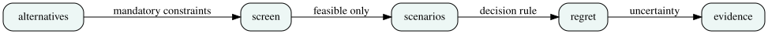

Concept Feasibility Before Scoring Alternatives
Week 6 · hard constraints · charging-energy balance · screening · decision traceability
Robust Concepts, Regret, and Value of Information
Week 9 · scenario uncertainty · expected loss · minimax regret · sensitivity analysis
Engineering concept diagram
